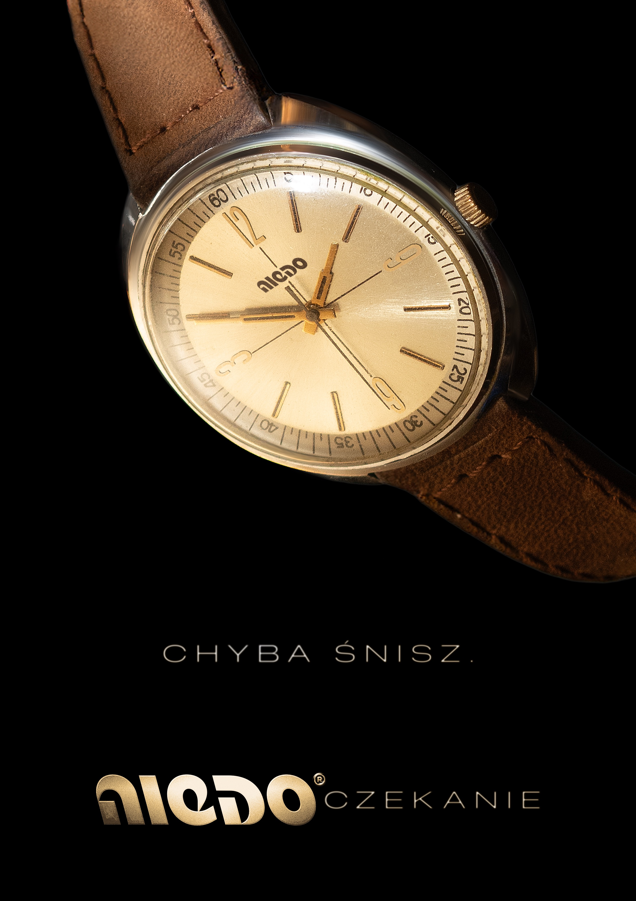
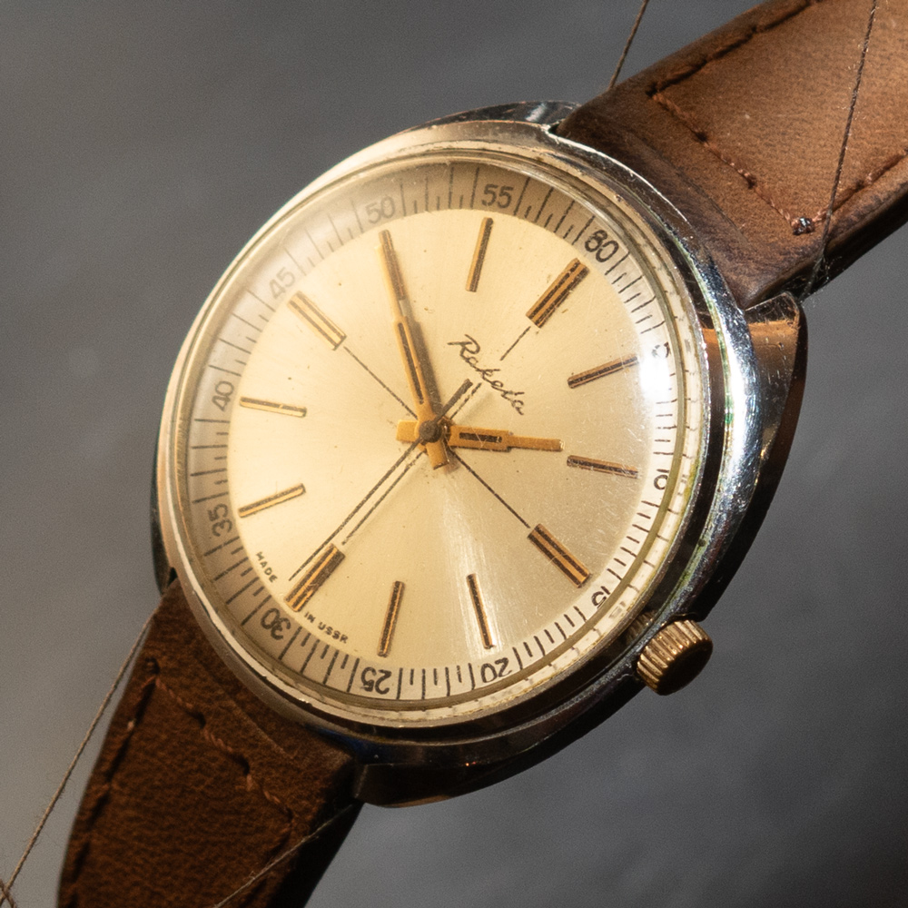

Niedoczekanie 2025

TRANSLATION: You must be dreaming. / untranslatable idiom, literally "un/waiting" meaning that somebody will not live (or wait) to see something happen
here goes the zine image and a few words about the project plus link to ig



scroll right to see the step-by-step retouch ➝
One of the joyful aspects of this project was the editing of the watch picture itself using traditional Photoshop blurs, healing brush, blending modes instead of generative fill and prompts. On a day-to-day basis when working on assets for big ecom clients this is a rarity.
There is no watch worth attention without a timeless logo, so the parody also included this retro geometric typography in a backwards slant to match the fact that the watch has its hour markers in reverse while minutes go the right way. This is not how time works.
© 2025 Mikołaj Grabowski